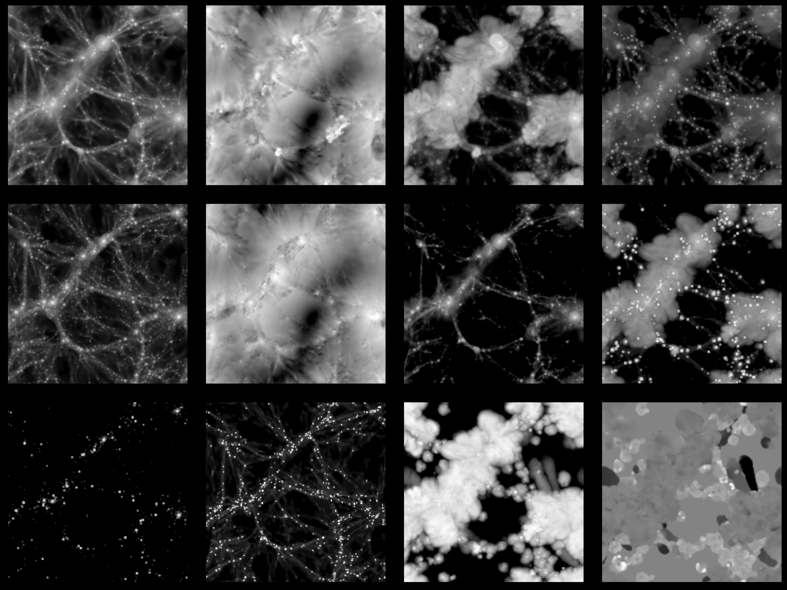

Data¶
Structure¶
CMC data can be classified into three categories 1) IllustrisTNG, 2) SIMBA, and 3) Nbody, where the name indicates the type of simulations used to generate the data. Each category contains the following data:
IllustrisTNG
15,000 images per field for 13 different fields.
4,000 3D grids per field for 13 different fields.
SIMBA
15,000 images per field for 10 different fields.
4,000 3D grids per field for 10 different fields.
Nbody
15,000 images of one single field.
4,000 3D grids of one single field.
All images have \(256\times256\) pixels and cover an area of \(25\times25~(h^{-1}{\rm Mpc})^2\) at redshift 0. The 3D grids contain \(128^3\), \(256^3\) or \(512^3\) voxels over a volume of \(25\times25\times25~(h^{-1}{\rm Mpc})^3\) at redshifts 0, 0.5, 1, or 1.5.
Field |
IllustrisTNG |
SIMBA |
Nbody |
Prefix |
|---|---|---|---|---|
Gas mass |
yes |
yes |
no |
Mgas |
Dark matter mass |
yes |
yes |
no |
Mcdm |
Total matter mass |
yes |
yes |
yes |
Mtot |
Stellar mass |
yes |
yes |
no |
Mstar |
Gas velocity |
yes |
yes |
no |
Vgas |
Dark matter velocity |
yes |
yes |
no |
Vcdm |
Gas temperature |
yes |
yes |
no |
T |
Gas pressure |
yes |
yes |
no |
P |
Gas metallicity |
yes |
no |
no |
Z |
Neutral hydrogen mass |
yes |
yes |
no |
HI |
Electron abundance |
yes |
yes |
no |
ne |
Magnesium over Iron ratio |
yes |
no |
no |
MgFe |
Magnetic fields |
yes |
no |
no |
B |
We show an example of how the IllustrisTNG images look like for the different fields:
where from top-left to bottom-right: gas mass, gas velocity, gas temperature, gas pressure, dark matter mass, dark matter velocity, electron abundance, magnetic fields, stellar mass, neutral hydrogen gas metallicity, and magnesium over iron ratio.
These images show different properties of the gas, dark matter, and stars in a given Universe. Determining the value of the cosmological parameters from these images will help us to decode the true value of our own Universe, allowing us to unveil some of the biggest misteries in fundamental physics.
2D maps¶
The generic name of the files containing the maps is Images_prefix_sim_LH_z=0.00.npy, where prefix is the word identifying each field (see table above), sim can be IllustrisTNG, SIMBA or Nbody. For instance, the file containing the gas mass maps of the IllustrisTNG simulations is Images_Mgas_IllustrisTNG_LH_z=0.00.npy. The 2D maps are stored as .npy files, and can be read with the numpy load routine. For instance, to read the SIMBA gas temperature maps do:
import numpy as np
# name of the file
fmaps = 'Images_T_SIMBA_LH_z=0.00.npy'
# read the data
maps = np.load(fmaps)
The file contains 15,000 maps with \(256\times256\) pixels each.
The value of the cosmological and astrophysical parameters characterizing the maps of a given field is params_sim.txt where sim can be IllustrisTNG, SIMBA or Nbody. These files can be read as this:
import numpy as np
# name of the file
fparams = 'params_SIMBA.txt'
# read the data
params = np.loadtxt(fparams)
The file contains 1,000 entries with 6 values per entry. The first and second entry are the value of \(\Omega_{\rm m}\) and \(\sigma_8\), while the rest represent the value of the astrophysical parameters: \(A_{\rm SN1}\), \(A_{\rm AGN1}\), \(A_{\rm SN2}\), \(A_{\rm AGN2}\).
Note
In the case of the Nbody maps, only the first and second columns (the ones containing the value of \(\Omega_{\rm m}\) and \(\sigma_8\)) are relevant. The other 4 columns can be disregarded. They are only kept to standarize the training of the networks.
The value of the cosmological and astrophysical parameters of a given map can be found as
map_number = 765
params_map = params[map_number//15]
See this colab for further details on how to manipulate the images and the value of the parameters.
3D grids¶
The generic name of the files containing the 3D grids is Grids_prefix_sim_LH_grid_z=redshift.npy, where prefix is the word identifying each field (see table above), sim can be IllustrisTNG, SIMBA or Nbody, grid can be 128, 256, or 512 and redshift can be 0, 0.5, 1 or 1.5. For instance, the file containing the 3D gas metallicity of the IllustrisTNG simulations on a grid with 256^3 voxels at redshift 0 is Grid_Z_IllustrisTNG_LH_256_z=0.00.npy. The 3D grids are stored as .npy files, and can be read with the numpy load routine. For instance, to read the SIMBA neutral hydrogen mass at redshift 1.0 with a grid of 128^3 voxels do:
import numpy as np
# name of the file
fgrids = 'Grid_HI_SIMBA_LH_128_z=0.00.npy'
# read the data
grids = np.load(grids)
The file contains 1,000 grid with \(128\times128\times128\) voxels each.
The value of the cosmological and astrophysical parameters characterizing the maps of a given field is params_sim.txt where sim can be IllustrisTNG, SIMBA or Nbody. These files can be read as this:
import numpy as np
# name of the file
fparams = 'params_SIMBA.txt'
# read the data
params = np.loadtxt(fparams)
The file contains 1,000 entries with 6 values per entry. The first and second entry are the value of \(\Omega_{\rm m}\) and \(\sigma_8\), while the rest represent the value of the astrophysical parameters: \(A_{\rm SN1}\), \(A_{\rm AGN1}\), \(A_{\rm SN2}\), \(A_{\rm AGN2}\).
Note
In the case of the Nbody maps, only the first and second columns (the ones containing the value of \(\Omega_{\rm m}\) and \(\sigma_8\)) are relevant. The other 4 columns can be disregarded. They are only kept to standarize the training of the networks.
The value of the cosmological and astrophysical parameters of a given grid can be found as
grid_number = 821
params_map = params[map_number]